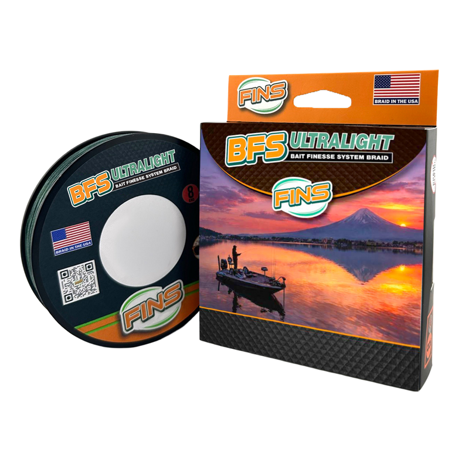

FINS BFS Ultralight Braid
Diameter chart, reel capacity & backing guide

FINS BFS Ultralight is an eight-carrier braid offered from 4 to 15 lb for bait finesse and ultralight fishing. The small diameters matter here: 8 lb is listed at 0.090 mm, while 15 lb is 0.128 mm. Choose a strength below to see how much fits your reel, or plan a shorter working section over backing.
- Construction
- 8-carrier braided main line; made in the USA
- Listed strengths
- 4-15 lb
- Line type
- Braid main line
A thin main line for small presentations
Consider this line for a light spinning setup or a bait-finesse reel designed for thin line. Match the strength to the rod, lure and cover first. A large capacity estimate does not mean an ultralight reel needs hundreds of yards, and a 15 lb label does not make this thin braid a substitute for every heavier-cover setup.
How much BFS Ultralight will fit?
Calculated estimates, not measured fills. Stop at the reel manufacturer's fill level even if some line remains.
FINS BFS Ultralight diameter chart
Manufacturer-listed millimeter diameters for all six strengths. The inch values here are converted from those millimeter figures, not the more coarsely rounded inch labels. Listed package lengths are 150 and 500 yards.
| Strength | Inches | mm | Spools (yd) |
|---|---|---|---|
| 0.002087 | 0.053 | 150, 500 | |
| 0.002913 | 0.074 | 150, 500 | |
| 0.003543 | 0.090 | 150, 500 | |
| 0.004094 | 0.104 | 150, 500 | |
| 0.004606 | 0.117 | 150, 500 | |
| 0.005039 | 0.128 | 150, 500 |
Choosing your BFS Ultralight strength
The 4 and 6 lb sizes are listed at 0.053 and 0.074 mm. These are the thinnest options in this family, so check that your reel is suitable for very fine braid and that the rod and drag setting protect a light setup.
At 8 and 10 lb, the listed diameters are 0.090 and 0.104 mm. Compare those measurements with the line already on your reel instead of assuming another brand's 8 or 10 lb braid takes up the same space.
The 12 and 15 lb options step up to 0.117 and 0.128 mm. They remain fine-diameter lines. On a baitcaster, keep the wraps firm and check for line digging in after a snag or hard pull.
This is a specification-based setup guide, not a hands-on test or an independent measurement of braid diameter.
Want a guided recommendation?
Continue in the Setup WizardSame pound test, different diameters
At your selected strength
Loading diameter comparisons...
What changes with another line?
Nearby diameters in the line database
| Line | Strength | Inches | Difference |
|---|---|---|---|
| Loading line database... | |||
Backing, working line & leaders
Decide how much working line you need
A 150-yard package is available, but you do not have to put all of it on one reel. Pick a working length that covers your casts and a sensible reserve, then calculate optional backing beneath it. A full main-line fill is also an option.
Keep the fine braid secure
Use steady tension while spooling. Follow the reel maker's instructions for tying braid directly to the spool, or use a short mono base where needed to prevent the entire line pack from slipping.
Check the last few yards by eye
Stop at the reel's recommended fill clearance rather than forcing on the last part of a calculated amount. Nominal braid diameter and the way it lays on the spool can affect the final fill.
How Much Fits on These Reels?
Estimated full-spool capacity for the BFS Ultralight strength selected above, with no backing. These are calculated examples, not physical tests or recommendations for every pairing.
Loading capacity estimates...
BFS Ultralight questions, answered
What is the listed diameter of FINS BFS Ultralight 8 lb?
FINS lists 8 lb at 0.090 mm. ReelCalc converts that millimeter figure to inches without rounding it first, so the calculation keeps the precision of the manufacturer's metric listing.
Can I use it on a spinning reel as well as a BFS baitcaster?
FINS markets this braid for bait finesse and ultralight fishing. A suitable light spinning reel is another option. Check the reel's line guidance and match the rod, drag and leader to the intended setup.
Which spool lengths and colors are listed?
The manufacturer lists 150- and 500-yard packages in Dark Green and Chartreuse. These are listed configurations, not a guarantee that every combination is currently in stock.
Do I have to use backing?
No. You can calculate a full spool of main line or add backing beneath a shorter working section. Even without volume-filling backing, braid still needs a secure attachment to prevent slipping on the arbor.
Specifications & sources
Checked October 12, 2026 against the FINS BFS Ultralight product listing and launch article. The six published millimeter values are preserved exactly. ReelCalc uses their unrounded inch conversions for calculations.
Calculations use the catalog's listed inch diameters. Published inch and millimeter values may differ slightly because of rounding.
- FINS BFS Ultralight product specifications Strengths, diameters, package lengths, colors and construction.
- FINS introduction to BFS Ultralight Manufacturer description of the bait-finesse and ultralight line family.